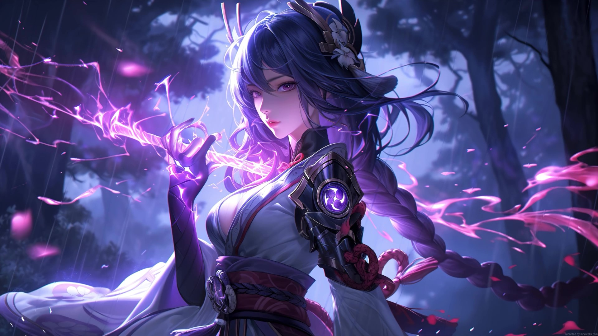

Raiden Ei, also known as the Electro Archon and the Raiden Shogun, is the ruler of the nation of Inazuma and the embodiment of the Electro element. She governs over eternity and enforces strict control to preserve her ideals.
Ei is a powerful and enigmatic figure who has secluded herself in her realm to meditate on the path of eternity, delegating her governance to a puppet created in her image—the Shogun. Her story in Genshin Impact is one of inner conflict, sacrifice, and learning to reconnect with the people of Inazuma.
Her pursuit of eternity led to the Vision Hunt Decree, a controversial act that caused unrest in the region. However, through the Traveler's influence, Ei begins to understand the flaws in her path and opens herself up to change.
Trivia: Raiden Ei wields a polearm and is known for her iconic Musou no Hitotachi sword strike, which she draws from her body during her Elemental Burst.
 ⬅️ Back to Main Page